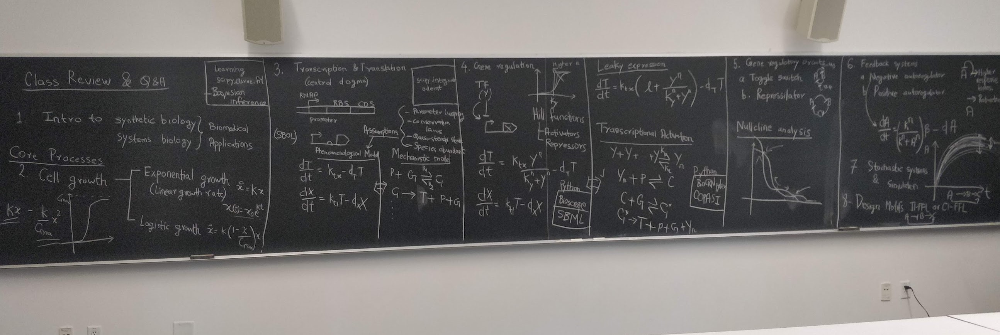

I am a PhD candidate in Control and Dynamical Systems at California Institute of Technology, working on
modeling and analysis of synthetic biological circuits. I am working with Richard Murray in the
Biocircuits Lab. For more
information on my research, please refer to the Publications
page. I occasionally write informal technical posts on the Blog
page.
I am working as an Adjunct Professor for Spring 2021-2022 semester at the Harvey Mudd
College. I am teaching a course that I have designed on Introduction to Biological System Design.
In 2019, I graduated with a masters in Electrical Engineering at Caltech. Before that, in 2017, I
graduated with a bachelors and a masters degree from the Indian Institute of Technoloy (IIT) Kharagpur,
India. My Bachelor of Technology degree is in instrumentation engineering and Master of Technology in
control systems engineering from the Electrical Engineering department.
Research Interests
Control theory
Systems and synthetic biology
Robustness of nonlinear systems
Artificial intelligence methods for systems modeling
Milestones
April 2022: Last lecture at Harvey Mudd! It was a pleasure teaching the class on Introduction to Biological System Design at the
Harvey Mudd College. Here's a snapshot of the class review lecture at the end: 
April 2022: New preprint! We posted a new bioRxiv preprint on our recent work: "From Specification
to Implementation: Assume-Guarantee Contracts for Synthetic Biology". PDF on bioRxiv. You can use the
implementation of our paper on Google
Colab to convert your own biological system specification into simple mathematical models!
March 2022: Presented a poster at the 8th Build-A-Cell workshop on "Full-Stack Modeling of
Biological Circuits: From Specifications to Implementation using Python. PDF.
February 2022: Our paper on "BioCRNpyler: Compiling Chemical Reaction Networks from Biomolecular
Parts in Diverse Contexts" was accepted (in February) and published (in April) in PLoS
Computational Biology.
January 2022: Our paper on "Robustness guarantees for structured model reduction of dynamical
systems with applications to biomolecular models" was accepted and published in the Special Issue on
Life Sciences of the International Journal of Robust and Nonlinear Control. URL.
December 2021: Appointed as Adjunct Professor at Harvey Mudd College for the Spring 2021-22
semester.
November 2021: Released a summary video of my research on model reduction. You can watch the video
here:
September 2021: We organized a workshop at International Workshop on Bio-Design Automation (IWBDA)
2021 on "Chemical Reaction Network Compilation to Bayesian Parameter Inference". You can check out
the workshop poster
and the recording
on Youtube. All content of the workshop was interactive using Google Colaboratory notebook,
which is available here.
September 2021: Helped write a research grant proposal on forward design of synthetic biological
circuits. Details soon.
August 2021: Served as a reviewer for the Journal of Open Source Software (JOSS) to review the paper on OSTIR:
open source translation initiation rate prediction. Check out the software on Github and the paper here.
August 2021: Co-mentored three Caltech undergraduate students in their summer internship projects in
our lab. Details on the Teaching and Mentoring page.
July 2021: Our theory paper on robustness of model reduction for linear dynamical systems accepted
at Conference on Decision and Control (CDC) 2021. You can read the paper PDF here. I am also a student host volunteer for
the conference - to be organized virtually in December 2021.